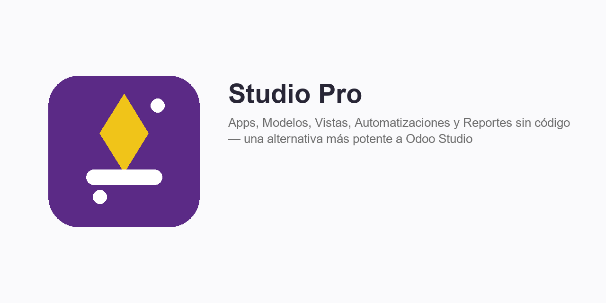
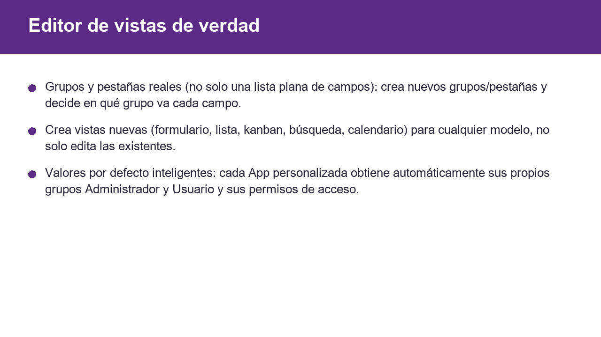
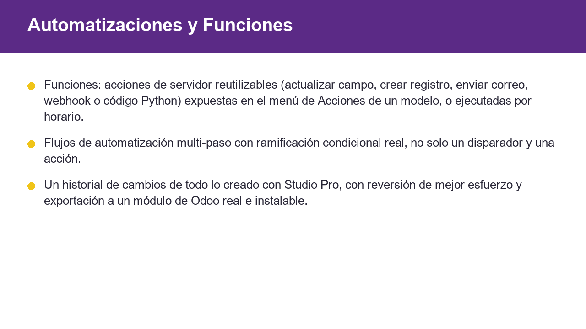
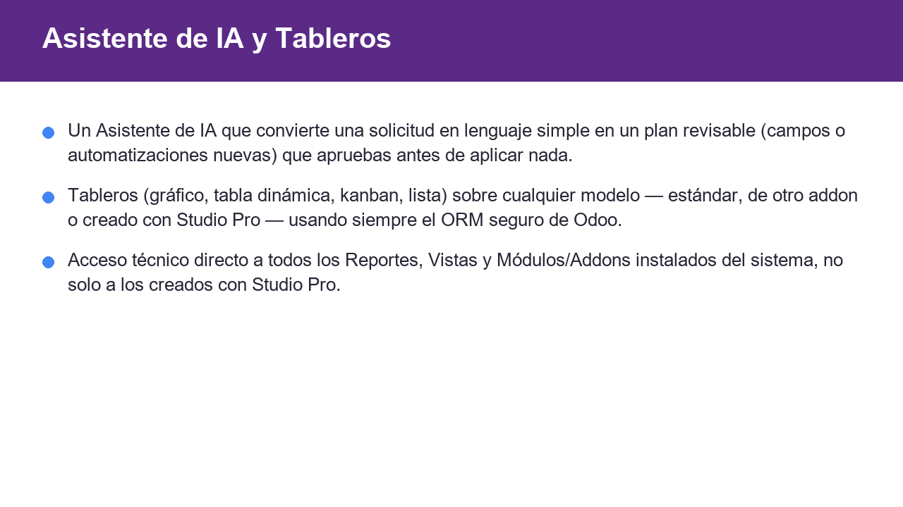
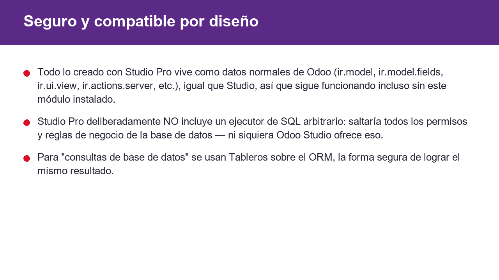

Crea Apps, Modelos, Campos, Vistas, Automatizaciones multi-paso, Reportes PDF/QWeb y Permisos de Acceso personalizados enteramente desde el backend de Odoo, sin tocar una línea de código.




Todo lo creado con Studio Pro vive como datos normales de Odoo (ir.model,
ir.model.fields, ir.ui.view, ir.actions.server,
etc.), así que sigue funcionando incluso sin este módulo instalado.
Studio Pro deliberadamente NO incluye un ejecutor de SQL arbitrario. Permitir SQL libre saltaría todos los permisos y reglas de negocio de la base de datos — ni siquiera Odoo Studio ofrece eso. Para "consultas de base de datos" se usan Tableros (gráfico/tabla dinámica) sobre el ORM, que es la forma segura de lograr el mismo resultado.
Soporte: luissalvador1987@gmail.com